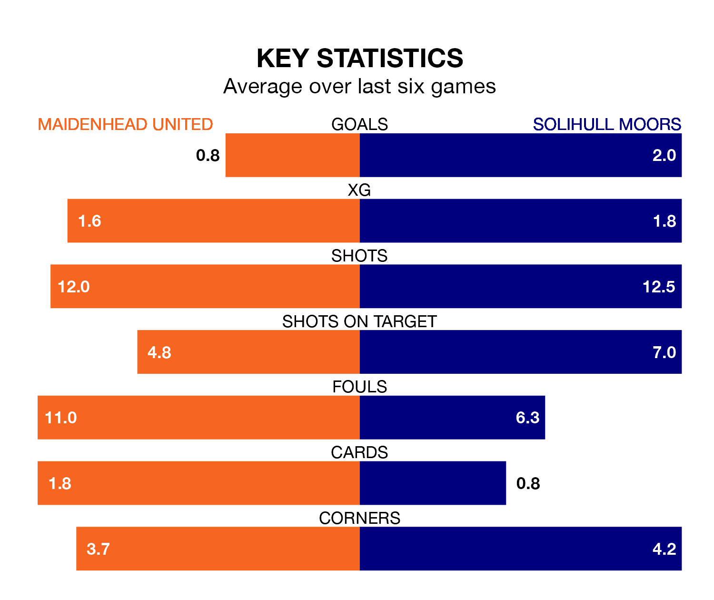

Maidenhead United host Solihull Moors on Saturday at the York Road Stadium in National League.
In their last league match, on Tuesday, Maidenhead lost to Ebbsfleet United 1-0 at home.
Solihull Moors won, 3-0 at home against Woking on January 6, with Callum Maycock, James Clarke and Mark Beck on the scoresheet.
In the last 10 years, Maidenhead and Solihull Moors have played each other on 13 occasions. Maidenhead won five of them, Solihull Moors six, and they drew twice.
On average, Maidenhead scored 1.1 goals and the Moors 1.5 in those matches.
Their last meeting was on November 18, when Maidenhead won 2-1 away.
Solihull Moors are fourth in the table after 27 games, of which they have won 13 and drawn seven, earning 46 points.
Maidenhead are 14 places behind the Moors in 18th, with seven wins and 11 draws putting them on 32 points.
With 28 goals in 28 games so far this season, United are the league's joint-third-lowest scorers with 1.0 goals per game. But they are conceding fewer than average too, letting in 36 goals at a rate of 1.3 per game.
The away side, meanwhile, are above average scorers, with 1.6 goals per game, compared to a league average of 1.5. They have conceded 1.4 goals per game.
The hosts are in mixed form in National League, with two wins and two draws from their last six games.
With three wins and three losses over that period, Solihull Moors's form is slightly better – they have taken nine points from 18, compared to Maidenhead's eight.
Updated: 09:07 (UTC), 24/01/24